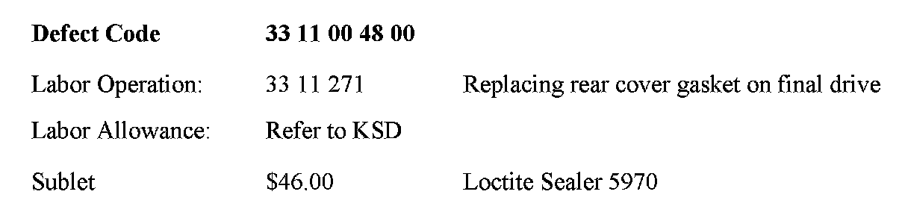

Drivetrain - Differential Cover Sealant
SI B 33 03 08Rear Axle
April 2008
Technical Service
SUBJECT
Differential Cover Sealer
MODEL
All models
INFORMATION
Resealing the differential cover requires a liquid sealer as per Repair Instruction RA 33 11 ... Replacing rear cover gasket on rear deferential. The Repair Instruction advises the technician to refer to the EPC for the correct sealer; however, this material is not available via the BMW parts distribution system. It is recommended that the Loctite Sealer 5970 be used to perform these repairs; when needed, it must be ordered via telephone from the following vendor.
PARTS INFORMATION
Applied Industrial Technologies
Telephone: 517-787-2414
Payment Type: MasterCard or Visa
Order item number 39246 (Loctite 5970 300ml)
Material cost: $35.48 plus $9.77 for shipping and handling
Note:
One 300ml tube will be needed per vehicle. An unopened tube of sealer has a shelf life of 6 months, and it is recommended that the sealer be ordered on a case-by-case basis only.
WARRANTY INFORMATION

Covered under the terms of the BMW New Vehicle Limited Warranty.

Disclaimer